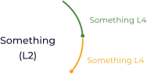

How to use this report?
know about interests skills and personality that suits you the best.
| Logoipsum |
CAREER INSIGHT
REPORT
Ankit Kumar
ID :200136
How to use this report?
know about interests skills and personality that suits you the best.
Who am I?
know about interests skills and personality that suits you the best.
How do I know about my Intelligence?
Understand your strengths and weakness and learn how it useful for future carrers
What am I skilled at?
A comprehensive list of your Dominant Competencies
Future Carrers
Selection of futuristic paths for you
Science behind recommendations
know about interests skills and personality that suits you the best.
What is my personality?
Get to know the traits which suits describes you best and suggest suitable carrers
What are my Vocational Interests?
Learn about your interests and know which are the best suited carrers
What's out there for me?
A list of carrers that best suited for you
Interospective Sheet
A list of questions that you can ask yourself
You have been walking this journey all by yourself untill now,from here onwards untill we will help you choose the right path with Olwin, who will be right by your side, throughout this report.
You have taken the Redeminds Comprehensive Assessment, now we will go through the results, understand what they mean, and suggest future steps.
The Redeminds Carrers inshight report is a guide to informed carrer choices based on your identified skills, abilities, personality, and interests.
You may reflect on your choice of interests and develop added talents from the information you learn here.
Please note that this is just the starting step of discovering your carrer journey and in no way this is definitive.

We all constantly change with time, remember that as you read this report reflecting your strengths right now and ways you an unlock a better version of yourself.
Redeminds adopts a data-driven scientific approach that is combined with extensive psychological research of carrers and attributes.
The personality traits are based on the OCEAN Model which was first given by Lewis Goldberg, and later developed by Costa and McCrae. The OCEAN model of personality views human personality as five primary traits, which are Openness to experience, Conscientiousness,Extroversion, Agreeableness, and Neuroticism.
Howard Gardner proposed a theory that suggested eight types of Intelligence which suggested that there are multiple ways in which human can be smart rather than having only one aspect of being intelligent. The difference in Intelligence is based on the development of an individual and their surroundings.
The vocational interests are adopted from John L. holland;s theory of carrer choice which explained how certain personalities are better for particular carrer choices. for example, an extrovert will have more fun being a teacher tha an introvert. He found that there are essentially six types of vocational personalities.
Learning Styles were developed as an index to assess the learning preference in four dimensions by Richard M. Felder and Linda K. The ILS is a self-assessment tool that helps individuals understand their preferred learning style and provides guidance on how to adapt their learning strategies to better match their style.
The concept of Carrer Orientations or carrer anchors as called by Edgar Schein which refers to an individual's self-perceived talents, abilities, and values that guide their career choices and development. According to Schein, individuals develop career anchors through a combination of their early life experiences, feedback from others, and their own self-reflection
This page will give you a sneak peek into your results. As you go through the report, you will know about your dominant characteristics. The results are based on scores and scales, that you have been adapted from valid models and theories.
Personality
Your personlaity scores show that Summary of personality (All 5)- Summary of personality (All 5)
Summary of personality (All 5)Summary of personality (All 5)
Skills and Abilities
Your personlaity scores show that Summary of personality (All 5)- Summary of personality (All 5)
Summary of personality (All 5)Summary of personality (All 5)

Intelligence
Your personlaity scores show that Summary of personality (All 5)- Summary of personality (All 5)
Summary of personality (All 5)Summary of personality (All 5)
Vocational Interests
Your personlaity scores show that Summary of personality (All 5)- Summary of personality (All 5)
Summary of personality (All 5)Summary of personality (All 5)
Learning Styles
Your personlaity scores show that Summary of personality (All 5)- Summary of personality (All 5)
Summary of personality (All 5)Summary of personality (All 5)
Carrer Orientation
Your personlaity scores show that Summary of personality (All 5)- Summary of personality (All 5)
Summary of personality (All 5)Summary of personality (All 5)
Knowing personalityhelps in understanding your behaviour and it also gives us an idea about our strengths.
You like challenges and coming up with creative and new ideas. Being spontaneous and adventuroous helps you to bond with people and appreciate new experiences.
You occasionally like planning and schedules in your work. An increased level of self-control and discipline can be an advantage.
You are social and talktive, while effortlessly making friends and talking up leadership roles. You do well at jobs that require talking to people and becoming a mentor.
Your competitive streak keeps you motivated to perform, which is important for self-growth. You always think of ways to improve yourself or your team, increasing your creativity and motivating others to do better.
You have good control over your feelings and emotions, which helps you make informed decisions. This also increases your productivity and a better choice for a leader, as you remain calm under stressful situtions. People like you as they feel comfortable around you.
Intelligence make a large impact when we are aware of it, it's like understanding our strengths and weakness.
Logical-Math : You are good at analysing problems using logic and show a good understanding of math concepts. You notice the connection between patterns, and adopt reasoning and solve issue with math and scientific methods. This helps in learning about symbols, sloving puzzles, or brain teasers.
Naturalist : Your recognise and enjoy classification of many plants and animals conneect to nature and like to learn about the environment.You find beauty in everything nature gives us even if it's something materialistic, like a rock or cloud, and show interest in saving the environment, as a park ranger or a botanist.
Spatial : You can visualise patterns, objects, notice small details, and can identify various shapes in images. This helps you to remember objects and people well in detail and from different angles, such skills are useful for sculptors and pilots.
Musical : You can recognise and distinguish different tones, pitches, rythems and timber in anything you hear. Like a virtuoso, your ability to understand, appriciate, and feel sound is amazing and you can create some tones by yourself .This helps in remembering different tones and noticing musical patterns.
Emotional Intelligence is often known as ability to feel, understand, express, and handle our feelings and emotions.
Slef Awareness : You are aware of your mood and know-how to manage it. This helps you understand yourself and your feeling and emotions, this is known as self-awarness.
Self-Regualtion : You are able to control your feelings and know you're feeling an emotions, which motivates to learn techniques that can help control outbrusts of emotions.
Empathy : You possess a keen ability to sense what people around you are thinking around feeling. This helps you be an empathy who is aware of and inderstand other's emotions and recations.
Someone who is aware of their interests can focus on finding the best-matched carrer and accordingly work towards it.

Realistic individuals like manual activities, that require the involvment of good limb coordination or physical strength. You like to build things and learn by doing rather than just reading. This makes you an active person who likes the outdoors and participates in activities that require physical strengths.
Investigators observe and deeply think before working on anything. You use logic and science to get to the root of a question, which makes you good at solving complicated problems. You enjoy reading about math and science, which gives you an analytical perspective.
Artists are original, intuitive, and imaginative. Create htings out of your mind, make them come to life, and express your thoughts using various forms of art. Your work is unique and liked by people, which is a skill useful for graphic designers, illustrators, or singers.
Knowing your skills and abilities will help to have career optionsthat are appropirate and well in match with what you can do.
Active Learning : You prefer learning by doing and taking matters into your hands rather tha reading a book, which helps you understand better. This is one of the reasons, your practical concepts are clear and you have abetter understanding of prarctical subjects.
Persuasion : When addressing a crowd, you can easily draw people's attention. This skill is useful when communicating with your friends and family, building trus, increasing self-confidence, and helping to achieve higher positions at jobs.
Judgment and Decision Making : Using the given information , you make the best possible decisions. The most important thing is that you are aware of your mistakes, learn from them and make efforts to improve.
Memorization : You can recall varied information adn it benefits if you would like to be a singer, who has to remember lyrics or become an airplane pilot. Your performance gets better as a result of remembering concepts from the texts.
Mathematics : Being able to solve or even create simple to complex mathematics equations is a piece of cake, which makes you better at reasonaning and helps to understand other subjects well, like chemistry and physics.
This page will give you a sneak peek into your results. As you go through the report, you will know about your dominant characteristics. The results are based on scores and scales, that you have been adapted from valid models and theories.
Activist
Actively engaging in activity through discussions, practise, or explaining it to
others is the best way you to learn.
Sensing
You like solving problems using available methods that are based on facts and concepts.
This is most effective in preparing for relastic and practical problems while you use your ability
to remain patient and attend to details.
Verbal
You comprehend and express concepts through reading, speaking, or writing.
You not only can learn complex ideas, words and formulas in this manner, you can also
clearly explain and interpret them to others.
Sequential
You take in information one step at a time and connect it to previous knowledge,
while first looking at the details and then making sense of the whole picture, which makes
explaining the same to the easier. This initiates introspective and detail-oriantation while
avoiding errors.
Technical and Functional
You do not give up the chance to use your skills and always try to develop them.
You aim to become a specialist in an area of interest that motivates you to perform well.

Pure Challenge
You are interested in solving complex, odd and unsolvable problems and like challenges
that keep you on your toes, like being an athelete requires constant competition.
General Managment
You can identify, solve problems and take decisions even with incomplete information. Being someone
who is influential team player makes your leadership effective and gets satisfaction from team wins.
After reviewing them, understanding, and analysing all your answers using deep scientific research we came up with some of the best suited career options.
BEST FIT
|  |
GOOD FIT